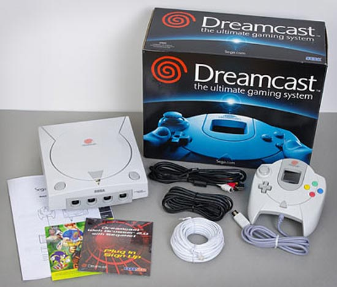

Lançamento do Dreamcast no ocidente.
 :::. Por Gigacom - Após um horripilante capitulo em que a Sega sofreu com a morte planejada e prematura do Saturn (é pessoas, o Saturn foi pra cova cedo, e quem enterrou foi a propria Sega), eis que ela ressurge como um deus olimpiano ressucitado, e provoca o maior surto de ansiedade nos jogadores no finalzinho da década de 90, anunciando e propagandeando aos 4 cantos do mundo o lançamento do Dreamcast, e todos aguardavamos que o Dream aportasse no Brasil oficialmente pela Tec Toy.
:::. Por Gigacom - Após um horripilante capitulo em que a Sega sofreu com a morte planejada e prematura do Saturn (é pessoas, o Saturn foi pra cova cedo, e quem enterrou foi a propria Sega), eis que ela ressurge como um deus olimpiano ressucitado, e provoca o maior surto de ansiedade nos jogadores no finalzinho da década de 90, anunciando e propagandeando aos 4 cantos do mundo o lançamento do Dreamcast, e todos aguardavamos que o Dream aportasse no Brasil oficialmente pela Tec Toy.
_______________________________________________________________________
Quando a Sega anunciou o projeto Katana não se falava de outra coisa. Todos queriam saber como seria o proximo console da gigante, que prometia ser o mais poderoso console, iniciando uma nova geração de games. Revistas, sites, jornais... em todo mundo, a novidade era esta. Em novembro de 1998, finalmente ocorre o lançamento oficial do Dream no Japão, em um evento extraordinário! Boa parte de Tokio estava enfeitada com faixas laranjas (da mesma cor do símbolo do Dream) e propagandas da Sega por todos os lados. Ao abrirem as lojas, o Dream evaporou das prateleiras, indo parar quase que instantaneamente em várias casas japonesas. O lançamento ocidental ocorreu bem mais tarde, em setembro de 1999 nos Estados Unidos. A demora teve lá seus efeitos, mas a Sega conseguiu contorná-los, e fez do dia 9/9/1999 uma data que entrou para a historia! Nunca, em um único dia, um console de video game havia sido vendido tanto!
Matéria da Ação Games nº 143, falando do lançamento americano e do console.
Clique nas imagens para ampliar.
O melhor de tudo é que a Tec Toy prometeu o lançamento do Dream no Brasil tambem, porém com uma entrada bem mais modesta. Poucas propagandas, preços altos, falta do console em várias lojas e cidades... Muita gente comprou o Dreamcast nacional, mas muito mais gente o comprou a versão americana vendida em feiras e lojas de eletronicos independentes. E não era de se condenar, o console da Tec Toy chegava nas lojas sem modem, com um preço altissimo (R$ 800,00 numa época em que o salário minimo era de míseros R$ 136,00) e com a única vantagem de ser possivel dividir o valor da compra em mil parcelas no carnê das Casas Bahia e 1 ano de garantia, além do que, como mencionei, não havia tantos consoles disponiveis por aí, só nas principais capitais e nas grandes lojas mesmo. Enquanto isso, nas maiores feiras de todo o pais, era possivel comprar a versão americana do Dream que vinha com o modem de 56kb e custava muito menos (por volta dos R$ 500-600), sem falar que tambem muitas vezes era possivel comprar o aparelho dividindo o valor no cartão de crédito por exemplo.
Mais matérias da Ação Games. A primeira anuncia a estratégia de lançamento no mercado americano, a segunda
algumas impressões de leitores que esperimentaram o novo console. Clique nas imagens para ampliar.
De todo modo, o Dream chegou aqui muito bem, com vários jogos de sucesso, e aos poucos os problemas de distribuição e disponibilização do produto foram sanados pela Tec Toy. Como no inicio o Dream ainda não sofria com a pirataria, era comum irmos em grandes lojas de varejo e encontrarmos familias comprando GDs para o Dreamcast. Isso mudou um pouco quando começaram a aparecer os primeiros CDs piratas, e muita gente deixou de comprar GDs originais, que nunca foram baratos, para comprar vários jogos no camelô. Curiosamente, foi nesse momento que o Dream realmente se popularizou no Brasil, afinal, muito mais que a metade dos gamers mal possuiam condições de comprar um Dream, quem dirá jogos originais! Aqui podemos citar a diferença gritante entre um jogo original e um pirata, por exemplo, o Sonic Adventure da Tec Toy era vendido por R$ 135,00 (um salário minimo) enquanto que um CDzinho piratinha, com o mesmissimo jogo era vendido 1 por R$ 10,00 e 3 por R$ 20,00. Agora diga, se você ainda fosse moleque, tivesse a sorte de ganhar um Dream que o seu pai comprou dividido em mil vezes no maior esforço, você ainda teria a coragem de pedir para o velho que ele comprasse um jogo original à esse preço? Bem, não sei você, mas a maioria preferia juntar os trocados do pão para comprar jogos no camelô.

Versão americana do Dream. Console, cabos, modem de 56k, controle... básico.
Todavia, a felicidade da Sega e da Tec Toy durou bem pouco. A Sony anunciou o lançamento do PS2 no inicio do ano 2000 e as compras do Dream no exterior começaram a dar sinais de queda, mesmo com a Sega se esforçando em baixar o preço do Dream e oferecendo diversas vantagens à novos clientes, porém nada foi que a Sega fez foi capaz de combater a debandada dos jogadores para o lado da Sony e do poderosissimo e promissor PS2 (esqueçam aquela historia de que o Dream é tão potente quanto o PS2, a verdade crua e real é de que o PS2 é, no minimo, 4 vezes mais capaz que o Dream em todos os sentidos). A Tec Toy bem que tentou prosseguir com as vendas do Dream no Brasil, e conseguiu. Montou o que pode de Dreams nacionais com peças importadas (processador, memorias, chips controladores) e fabricadas por aqui (fonte, controle, partes plasticas...), e além disso aproveitou para importar vários lotes de Dream do Japão e da Europa, sendo que os Dreams europeus importados pela TT são distinguidos por possuir um logo azul ao invés do alaranjado.
O Dreamcast resistiu bravamente no mercado brasileiro e era vendido nas prateleiras ao lado de caixas do PS2 e do Game Cube. Os GDs originais ficaram por aí muito mais tempo que o console, e a razão é bem obvia: o console ainda tinha quem o comprasse, mas os caros GDs... tanto é que, no fim de 2007 eu consegui encontrar alguns poucos GDs do House of the Dead 2, Crazy Taxi e um outro que não lembro, em uma filial das lojas Americanas aqui na cidade, e olha que eu moro numa capital! Era para esses GDs terem sumido ha tempos!
O Dream deixou saudades e muitos fãs no Brasil. Ainda é possivel comprar um em boas condições em sites de leilão por preços nada ruins, pois apesar de tudo, de toda a adoração, ele não é considerado um console raro ou dificil de encontrar. GDs originais tambem são encontrados com certa facilidade, não havendo titulos raros com a única excessão do Sonic Adventure 2 lançado pela Tec Toy (é complicado achar um desses, ainda mais completo e em estado colecionavel). De resto, todos os principais e melhores jogos do Dream podem ser comprados por quantias bastante justas.
Acesse o Trombone e comente sobre essa matéria!


{kind=link}
{kind=link}
{kind=link}
{kind=link}
{kind=link}
{kind=link}
{kind=link}
{kind=link}